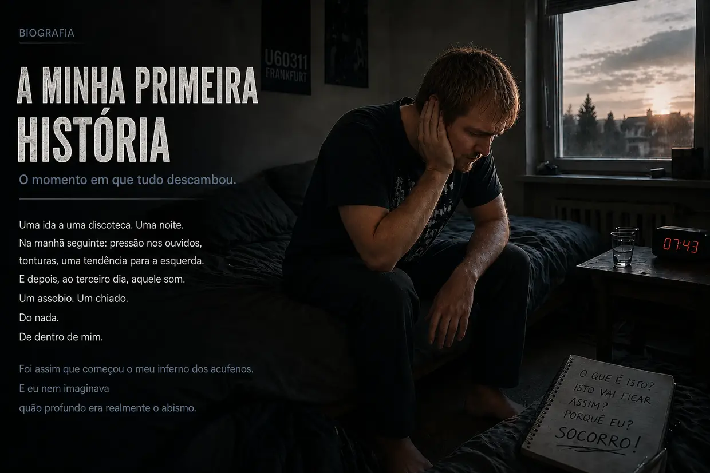

O meu caminho para o inferno dos acufenos — parte 1: a viagem infernal
Olá, chamo-me Dustin Müller. Como alguém que já passou por isto (e mais do que uma vez), senti uma necessidade extrema de dar vida a este site. Com os meus anos de pesquisa, protocolos reais de biohacking e experiências pessoais, quero mostrar a outras pessoas afetadas como encontrei pessoalmente o caminho para a cura completa. Mas, antes de mergulharmos a fundo nos mecanismos, tenho de contar como tudo isto começou no meu caso. E não foi um acaso médico, mas um crash frontal.
Procuras a versão curta? Esta versão longa entra em todos os pormenores — os audiogramas, as consultas de ORL, cada avanço decisivo. Se preferires uma versão mais compacta, a história curta é o sítio certo.
Outono de 2011: o corpo invencível e a sobrecarga prévia
Quando se tem 23 anos, tem-se energia sem fim e pensa-se que o corpo aguenta tudo. Foi com esta mentalidade que tratei também os meus ouvidos. Adorava música. Durante anos, ouvia-a nos auscultadores tão alto que os meus pais conseguiam ouvi-la através da porta fechada do meu quarto. O sistema já estava «cozido em lume brando», sem que eu soubesse.
Tudo começou por causa do meu primo. Como eu nunca tinha ido verdadeiramente a uma discoteca, disse-me que devia ir com ele à U60311, em Frankfurt. Tinha um mau pressentimento, mas acabei por aceitar. Logo ao descer as escadas, senti a brutalidade física do baixo. Ingenuamente, procurei lá dentro aquilo que julgava ser o melhor lugar — a cerca de 10 metros, mesmo em frente às colunas enormes, com o ouvido esquerdo virado diretamente para a fonte do som. Foi o erro que derrubou a primeira peça do dominó.
A manhã seguinte: a paz enganadora
Assim que a porta se fechou atrás de nós, senti uma pressão absurda nos ouvidos — muito mais intensa à esquerda. Tudo soava abafado, como se estivesse debaixo de água. O meu primo disse que era normal e que passaria. Como estava bêbedo, caí na cama. Na manhã seguinte, ao tentar levantar-me, desabei de imediato de volta na almofada — o sistema de equilíbrio estava destruído, com um forte desvio mecânico para a esquerda.
Como tinha uma confiança extrema nas forças regenerativas do meu corpo, quase levei a situação com humor: o tempo há de resolver isto. E assim parecia: no dia 2, o desvio para a esquerda diminuiu e a sensação de pressão desapareceu quase por completo. Respirei de alívio — achei que tinha escapado.
Dia 3: o monstro desperta
Dia 3 depois da discoteca. Acordei e ouvi de repente um ruído parecido com o apito de um frigorífico. Mas que raio? Encostei a cabeça à parede. Escutei junto à tomada. Verifiquei o computador, o despertador. Nada. Depois tapei os ouvidos com as mãos.
Foda-se. Vem de dentro de mim. Está na minha cabeça.
Fiquei ali, em choque, durante minutos. O que é isto? Isto vai ficar? No ouvido esquerdo, um zumbido grave, um chiado, sirenes e um assobio alto. Nessa altura, já ouvia também um assobio fraco no ouvido direito. Apesar do choque, pensei: isto há de passar.
O envenenamento do software (o prazo dos 14 dias)
Em poucos minutos, encontrei as respostas na Internet: perda auditiva súbita e lesão do ouvido interno. Perdas auditivas permanentes, muitas vezes acompanhadas de ruídos nos ouvidos. E depois a frase que me gelou o sangue nas veias: «Tem de ser tratado no prazo de 14 dias — caso contrário, torna-se crónico e fica-se com isto para toda a vida.» No fórum tinnitus.de, li tópicos de pessoas que viviam com aquela coisa há 5 anos. Cinco anos? Foda-se. Um problema físico transformou-se numa ameaça psicológica gigantesca.
A traição de bata branca (a minha primeira consulta de ORL)

Fui ao médico ORL que me acompanhava desde criança. Esperança. A salvação está quase a chegar. Contei-lhe a ida à discoteca e os sintomas. Ele, já ligeiramente irritado: «Sim, não preste atenção a isso. Ouça um pouco de música para encobrir os sons.» Insisti: «Mas não tem de ser tratado no prazo de 14 dias? E será mesmo sensato continuar a expor-me ao som?» Ele: «Primeiro vamos fazer uma audiometria.» Dito isto, saiu da sala. A minha fé começou a desmoronar-se.
O terror do silêncio (a audiometria)
Foi só ao entrar na cabina insonorizada que percebi a verdadeira gravidade da minha lesão auditiva. Naquele silêncio absoluto, desapareceu todo o mascaramento natural — os ruídos no meu ouvido esquerdo eram incrivelmente altos. O teste tinha três partes: determinar a frequência e a intensidade dos acufenos, medir a capacidade auditiva geral e testar a condução óssea no crânio.
O veredito
Com o resultado na mão, o médico explicou-me que a minha audição estava permanentemente danificada e que nada podia ser feito. Em choque, perguntei quais eram as hipóteses. Outra vez ligeiramente irritado: «Tem de aprender a viver com isso. Não preste atenção, distraia-se, ponha os auscultadores.» À minha pergunta absurda sobre se podia continuar a ir a discotecas: «Sim, isso não causa problemas.» E despediu-se.
O juramento e a viagem para casa
O caminho para casa foi o mais puro inferno. Um peso esmagador. No meu desespero, pensei por instantes: ou consigo livrar-me disto, ou já não quero viver. Mas, quando cheguei a casa, aquela tristeza sem fundo transformou-se de repente em desafio. Não consigo acreditar que nenhum médico na Alemanha saiba o que são os acufenos. Cerrei os punhos:
«Ou os acufenos vão embora, ou vou eu. Não vou permitir que esta coisa domine a minha vida. Tenho de descobrir por mim próprio o que se pode fazer.»
O Faroeste das abordagens à solução

Comecei a informar-me por mim próprio e deparei-me com uma quantidade esmagadora de «terapias»:
- Cortisona e ginkgo: substâncias que favoreciam a circulação sanguínea e combatiam a inflamação — parecia fazer sentido para a recuperação da audição.
- Mandíbula e pescoço (CMD/HWS): teorias segundo as quais as tensões musculares provocam os ruídos. Mas, como eu tinha ficado com acufenos, sem qualquer dúvida, por causa do baixo da discoteca, o meu radar de tretas disparou.
- TRT e mascaramento: encobrir com sons. De facto, conseguia reduzir os acufenos a curto prazo — mas, quando desligava o som, regressavam de forma mais agressiva e mais intensa. (Hoje sei: cada novo som obriga as células ciliadas, que já não têm energia, a trabalhar — gastam o último ATP, de que na realidade precisariam para a cura.)
- Suplementos alimentares: naquela altura, eu ria-me dessas pessoas. Que idiotas, pensava — ainda gastavam dinheiro em algo que eu considerava completamente inútil. Nunca teria sonhado que, mais tarde, seria precisamente por esse caminho — verdadeira energia celular, produção de ATP, os nutrientes certos — que iria vencer os meus acufenos.
A segunda consulta de ORL: o conselho fatal
Na manhã da 2.ª consulta de ORL, os acufenos tinham-se intensificado subitamente de forma brutal — também o assobio fraco que já existia no ouvido direito estava agora muito mais alto. (Hoje sei: a exposição sonora continuada por conselho médico — com música e, à noite, com ruído branco — tinha voltado a pôr as minhas células de joelhos e agravado o som que já existia no ouvido direito.) O segundo médico ORL foi simpático e encorajador. Receitou ginkgo e recomendou dormir o suficiente e fazer exercício. À pergunta sobre os auscultadores: «Até é benéfico para se distrair.» (Do ponto de vista atual da biologia celular, um conselho absolutamente fatal.) À pergunta sobre a cronificação ao fim de 3 meses, limitou-se a responder: «Vamos ver… também se pode aprender a compensá-los, isto é, a filtrá-los por completo.» Lá estava outra vez aquela meia frase que excluía qualquer cura verdadeira.
A enganadora roda de hamster
Assim passaram dias e semanas. Durante o dia, a escola distraía-me. À noite, refugiava-me no enganador ciclo de mascaramento: música nos auscultadores e exposição contínua a sons de cascata. Assim, conseguia tornar a situação suportável a curto prazo. Mas, em termos biológicos, andava às voltas: a paisagem sonora mantinha os meus ouvidos exaustos sob stresse constante. As minhas células queimavam o último ATP a processar aquele ruído artificial, em vez de o utilizarem para a reparação física. Puro modo de sobrevivência.
O segundo crash: hiperacusia e o salto mortal da vertigem
Certa manhã, voltou de repente uma enorme sensação de pressão no ouvido esquerdo. Tentei ignorá-la e fui para a escola. Como continuava a confiar no conselho médico, cometi um erro fatal durante o trajeto: pus a minha canção preferida muito alta no rádio do carro. Se tivesse imaginado o que ainda me esperava naquele dia de aulas, teria dado meia-volta imediatamente. Os sinais de alerta já lá estavam. Mas não o fiz: as aulas custavam dinheiro, por isso continuei. (Aquela música alta foi a derradeira gota para as minhas células completamente exaustas.)
Na primeira aula, surgiram de repente fortes distorções auditivas e uma hipersensibilidade dolorosa a sons normais — hiperacusia. (Hoje sei: os «amortecedores» do meu ouvido, as células ciliadas externas, tinham gasto o último ATP.) Ao longo das horas seguintes, a pressão no ouvido esquerdo tornou-se cada vez mais brutal. Depois, aconteceu: todo o meu campo de visão começou a rodar verticalmente — como meio salto mortal dentro da cabeça. O mundo ficou de pernas para o ar. Ao fim de alguns segundos, a visão voltou ao normal. O que ficou foi uma forte vertigem oscilatória, uma tendência acentuada para a esquerda e audição abafada à esquerda. (A acumulação de iões no meu ouvido interno tinha-se tornado tão gigantesca que inundara o órgão de equilíbrio adjacente.)
Em pânico, tentei aguentar. Assim que começou o intervalo, pus-me a andar dali para fora. A viagem para casa foi imprudente — devido à vertigem extrema, tinha de corrigir a trajetória de poucos em poucos segundos. Mas só queria chegar a um lugar seguro. Este segundo colapso foi o ponto de viragem absoluto: Não posso continuar à espera que isto passe.
Médicos ORL 3 e 4: comprimidos em vez de respostas, mentira do ruído fantasma e rótulo psicológico
Ainda nesse dia, consegui uma consulta de urgência com o 3.º médico ORL. Audiometria, teste do olfato, um teste de «vertigem posicional» que não alterou nada. (Hoje é claro: não eram cristais soltos, mas uma hidropisia endolinfática — abanar a cabeça não resolve nada nesse caso.) Uma colega acrescentou o diagnóstico: «nova perda auditiva súbita, passa ao fim de 14 dias» — ou talvez se devesse aos seios perinasais obstruídos, simples palpites sobre os sintomas. Depois, a bomba: «Sabe, muitas pessoas entram em depressão. Se os sintomas persistirem, terei todo o gosto em receitar-lhe antidepressivos.» Fiquei ali sentado a pensar que não podia estar a ouvir bem. O meu sistema de equilíbrio tinha colapsado e a solução dela era… psicofármacos? Jurei a mim próprio: nunca.
Ao 4.º médico ORL — o «especialista» — contei a minha história completa. Em vez de abordar a questão ao nível celular, respondeu, com uma frieza implacável: «Já ouviu falar de terapia cognitivo-comportamental? O seu problema é concentrar-se demasiado nos seus problemas auditivos e, com isso, manter os acufenos.» Contrapus: «Mas o ruído surgiu fisicamente por causa da ida à discoteca!» Não reagiu de todo. À pergunta sobre a cortisona: «Isso só faria sentido nos primeiros 14 dias. No seu caso, temos de partir do princípio de que se trata de um ruído fantasma.» Para terminar, voltou a recomendar TRT com sons de fundo — e recusou ouvir-me quando expliquei que o mascaramento só tornava os meus acufenos mais agressivos. O sistema tinha capitulado e atirado as culpas para cima de mim.
O ponto mais baixo de todos: isolamento e falha do sistema
O pesadelo atingiu o auge na minha própria festa de aniversário (um mês e meio depois da perda auditiva súbita). A hiperacusia e as distorções auditivas estavam a enlouquecer-me. Os meus próprios acufenos eram tão intensos que abafavam por completo o que as outras pessoas diziam. Surgiu ainda um fenómeno bizarro: as letras soavam de forma completamente diferente — um «S» soava como um «F», um «T» como um «D». Já não aguentava a sobrecarga de estímulos, interrompi a minha própria festa de aniversário e fugi para casa. Nos dias seguintes, a vertigem tornou-se tão extrema que, por momentos, quase caía — um complexo de sintomas que, em medicina, corresponde à «doença de Ménière». Estava completamente isolado e fechado ao mundo. Abandonado pela vida e abandonado pelos médicos, que se tinham limitado a martelar na minha cabeça que aquilo era tudo da minha cabeça e que eu precisava de antidepressivos.
A primeira experiência decisiva: a prova contra a mentira do ruído fantasma
Precisamente a altas horas de um fim de semana, tive uma inflamação do canal auditivo causada por uma infeção — por isso, tive de me arrastar até às urgências do hospital universitário de Frankfurt. O médico ORL pegou num aspirador minúsculo para aspirar os canais auditivos, um após o outro. E foi precisamente nesse momento que aconteceu a experiência decisiva de todas: quando o ruído estridente assolou o ouvido esquerdo, senti, ao mesmo tempo, os acufenos reagirem ali de forma agressiva e explosiva àquele estrondo. Depois, no ouvido direito: exatamente o mesmo.
Foi um teste A/B perfeito no meu próprio corpo. A minha lógica desmontou num instante as afirmações do «especialista»: um ruído fantasma psicológico não reage ao mesmo tempo a um estímulo sonoro puramente mecânico no respetivo canal auditivo! Para mim, aquela reação foi a prova absoluta: a fonte defeituosa continuava lá em baixo, no meu ouvido. Sob o ruído, as células gritavam de imediato por ajuda.
Perfusão de cortisona e o milagre das ligaduras de gaze
O médico ORL perguntou, de passagem, há quanto tempo tinha ocorrido a perda auditiva súbita. Dois meses. Como eu ainda estava dentro do prazo mágico dos 3 meses, segundo ele, valia a pena tentar a cortisona. Aceitei imediatamente e fiquei internado durante a noite. Na cama do hospital, continuei a pesquisar e fui parar ao site pessoal de um doente com acufenos. O que li ali fazia sentido em termos de biologia celular: mais ruído agrava drasticamente os acufenos. Havia ainda uma ligação para o Dr. Wilden e a sua terapia com laser de baixa intensidade, que estimula especificamente a produção de ATP nas células. Encaixava a 100 % na experiência com o aspirador.
Ao fim de 3 dias, tive alta — com ligaduras grossas de gaze em ambos os ouvidos por causa da inflamação dos canais auditivos. Já durante esses dias, reparei: os acufenos tinham ficado percetivelmente menos intensos! Primeiro, pensei que se devia à cortisona. Mas, quando li no site do Dr. Wilden como era fundamental procurar ativamente o silêncio, atingiu-me como um raio: os meus ouvidos tinham ficado fortemente isolados durante dias pelas ligaduras de gaze! Um médico ORL normal nunca me teria deixado os ouvidos tão isolados. Sem querer, tinha obtido a prova de que o silêncio absoluto produzia um efeito.

O estrondo, a dinâmica e o protocolo de silêncio absoluto
Poucos dias depois, surgiu outra descoberta importante. Durante uma aplicação com um pequeno frasco de creme diretamente junto ao ouvido, houve de repente um forte estrondo. Numa fração de segundo, os meus acufenos uivaram — MAS regressaram ao seu nível «normal» em muito pouco tempo. Tornou-se claríssimo para mim: os meus acufenos não eram algo «fixo», mas extremamente dinâmico! Reagiam em tempo real ao ruído, agravando-se — e diminuíam quando eu procurava o silêncio de forma sistemática.
Tirei daí consequências radicais. A partir daquele momento, passei ativamente tanto tempo quanto possível em silêncio absoluto. Música, filmes e encontros com amigos passaram de coisas do dia a dia a «recompensas» raras — e, quando aconteciam, era estritamente sem auscultadores, a um volume muito baixo e por muito pouco tempo.
Seis meses de silêncio — e a estagnação nos 25 %
EFETIVAMENTE, os acufenos foram diminuindo de mês para mês. Olhando para trás, a intensidade tinha descido cerca de um quarto ao fim de aproximadamente 8 meses. No entanto, era claro que eu não conseguia manter este silêncio absoluto de forma 100 % perfeita — até viagens de carro indispensáveis (200 km de ida e volta) faziam os acufenos regressar ao nível elevado. Era como se tivesse poupado os ouvidos durante uma semana inteira «para nada».
Depois, aconteceu algo frustrante: por volta dos 20–25 % de melhoria, a cura parou de repente. Levei o meu isolamento ao extremo — evitava conversas, usava tampões nos ouvidos constantemente e até tinha banido do meu quarto o relógio de parede que fazia tique-taque. Mas nada mais acontecia. Zero.
Correção do atlas, CMD e HWS — o beco sem saída
Foi então que tive a ideia de voltar a aprofundar a relação entre a mandíbula, a coluna cervical e os acufenos. Deparei-me com a CMD (disfunção craniomandibular) e, no dentista, recebi uma goteira oclusal. Num centro de ortopedia, diagnosticaram-me uma síndrome da coluna cervical e receitaram-me treino de força (Med X). Cumpri ambos com disciplina férrea e, em paralelo, continuei a manter o silêncio. Ao fim de 2 meses, chegou a desilusão: as queixas de CMD e da coluna cervical melhoraram — mas, nos acufenos, não mudou ABSOLUTAMENTE NADA.
Última esperança: correção do atlas. Percorri 200 km até um terapeuta de medicina alternativa, que voltou a posicionar o meu atlas desalinhado com um aparelho especial e manipulações manuais. Também isso, ao fim de semanas, não trouxe — nada. O único efeito secundário: o terapeuta recomendou-me cascas de psílio, uma mistura de argila mineral e probióticos para a minha gastrite crónica. E, de facto, a inflamação da mucosa gástrica, rebelde havia quase um ano, desapareceu. Fiquei impressionado — a medicina convencional tinha falhado, o terapeuta de medicina alternativa tinha conseguido.
Vitamina B12 — a experiência decisiva (acidental) mais importante
Naquela altura, o meu pai sofria de polineuropatia. O médico de família diagnosticou-lhe uma deficiência acentuada de vitamina B12 e receitou-lhe injeções. Certa noite, quando injetou em si próprio o conteúdo de uma ampola diante dos meus olhos, disse pouco depois: as dores tinham diminuído e voltava a sentir-se mais quente. Uma ampola vermelha tão pequena produzia um efeito físico daquela dimensão?
Pesquisei e li: a B12 é A vitamina dos nervos. Os vegetarianos (e eu era vegetariano desde os 15 anos!) e os doentes com gastrite crónica (a minha só tinha melhorado há pouco tempo) correm um risco particularmente elevado. Fiz uma análise ao sangue por intermédio do meu médico de família: o valor estava muito baixo, mas ainda dentro do intervalo normal, pouco acima do limiar de deficiência. Mas o médico recusou dar-me injeções — «ainda dentro do intervalo normal». Abatido, saí do consultório.
Quando o meu pai precisou da injeção seguinte de B12, à noite, ganhei coragem e deixei que me desse também uma. Importante: desaconselho expressamente que faças isto sem acompanhamento médico. Uau — ao fim de minutos, senti a circulação melhorar, um calor agradável e a cabeça mais clara. Fui para a cama descontraído.
NA MANHÃ SEGUINTE: o milagre absoluto. Segundos depois de acordar, percebi-o de imediato — os acufenos tinham diminuído brutalmente! De uma melhoria de 25 %, passei de repente para uma melhoria de uns bons 40 %. Fiquei ali deitado, incrédulo e à beira das lágrimas. É certo que voltaram a piorar ao longo do dia — mas não até ao nível anterior. E, na manhã seguinte, outra vez: 40 %.
No site do Dr. Wilden, li que o seu laser estimula especificamente a produção de ATP nas células. E a B12 é essencial precisamente para essa produção de ATP. CLIQUE! Talvez nem precise do laser caro — posso aumentar o ATP através de nutrientes específicos.
Cólica biliar e o milagre da lecitina (o meu modelo da mielina na altura)
Enquanto esperava por suplementos multivitamínicos em doses elevadas vindos dos EUA, fui atingido pela catástrofe seguinte: uma cólica biliar provocada por cálculos biliares. Nas urgências, durante a noite, a médica só me quis propor uma operação — retirar a vesícula biliar. Recusei e voltei para casa por minha conta e risco.
Outra vez, pesquisa na Internet: uma pessoa afetada contou que tomar lecitina granulada durante meses lhe tinha dissolvido por completo os cálculos biliares. Comprei-a logo no dia seguinte, tomei 30 g e senti efetivamente a pressão no lado superior direito do abdómen diminuir. Importante: em caso de cálculos biliares, é indispensável procurar acompanhamento médico — esta é a minha experiência inteiramente pessoal numa situação aguda, não um conselho de tratamento para outras pessoas.
Mas o verdadeiro ponto alto surgiu 3 dias depois: depois de uma injeção de B12 + lecitina granulada, voltou a acontecer um milagre. No dia seguinte: uma melhoria de 60–65 % em relação ao estado inicial! Depois de meses de estagnação. Pesquisei e construí, naquela altura, o seguinte modelo: a lecitina é um material de construção central da camada de mielina (isolamento dos nervos). Segundo a investigação, seria precisamente esse isolamento que ficaria danificado nos acufenos causados pelo ruído: «Como quando a proteção de plástico de um cabo elétrico fino está destruída.» E a B12 seria A vitamina mais importante para a regeneração da bainha de mielina. Bolas — então não preciso apenas de ATP, mas também de MATERIAIS DE CONSTRUÇÃO! Hoje tenho uma visão mais aberta deste mecanismo: continuo a considerar possível o envolvimento do nervo auditivo ou da mielina, mas não consigo comprová-lo com segurança no meu caso. Também é possível que tenha existido um caminho indireto: a colina da lecitina poderia servir de material de construção para a acetilcolina e, através dela, apoiar o sistema parassimpático, o sono profundo e a regeneração — ou talvez a lecitina tenha acelerado a reparação celular por vários caminhos ao mesmo tempo. Talvez ambas as coisas se tenham combinado.
O avanço até aos 80 % (o bypass do complexo B)
Com lecitina, um suplemento multivitamínico e injeções de B12, a cura avançou — mas a melhoria dos acufenos ficou estagnada em cerca de 70 %. A minha suspeita: as outras vitaminas B não estavam a ser absorvidas em quantidade suficiente. Arranjei ampolas de B1 e B2, e comprimidos de B3, B5 e B8 em doses elevadas. E YES YES YES: mais uma redução de semana para semana! No 16.º–17.º mês depois da discoteca, os acufenos estavam efetivamente reduzidos a apenas 20 % (ou seja, uma melhoria de 80 %). Mas depois, outra vez: estagnação.
A cura definitiva: o «Carpet Bombing» das células
Pesquisei como um obcecado e cheguei, naquela altura, à conclusão de que pensar apenas em B12 e lecitina era demasiado limitado. Para a reparação da mielina que eu supunha e para outros processos de construção celular, o corpo precisava de toda uma variedade de outros nutrientes — ómega-3 (DHA/EPA), aminoácidos, vitamina C, vitaminas lipossolúveis A/D/E/K, minerais. Enchi-me literalmente de tudo: injeções de vitaminas B 2 vezes por semana, 30 g de lecitina 3–4 vezes por semana, aminoácidos em pó diariamente, 3 g de ómega-3, vitamina C em doses elevadas, a mistura de minerais da Life Extension, magnésio e zinco da NOW Foods, um copo de LaVita por dia, mais os comprimidos multivitamínicos do Dr. Rath. Um «Carpet Bombing» ortomolecular.
O fade-out e o fim do pesadelo (cura a 100 %)
Com o stack completo de nutrientes, a dinâmica mudou de vez. Segundo o meu modelo da altura, o meu corpo tinha agora energia ATP E a gama completa de materiais de construção. Em combinação com o modo monge, pôde finalmente trabalhar a sério. Hoje, vejo o melhor fornecimento de energia como a principal alavanca; ao mesmo tempo, os nutrientes forneciam cofatores e materiais de construção importantes e poderão ter acelerado ainda mais o processo. Como no início: de manhã, a bateria celular estava completamente carregada graças ao sono — o melhor estado. Ao fim do dia, com o cansaço acumulado, os acufenos voltavam a ficar mais intensos. Mas o silêncio ia abrindo caminho continuamente, cada vez mais fundo pelo dia adentro: primeiro, o som dos acufenos mantinha-se ausente até ao meio-dia. Depois, até à tarde. Os agravamentos ao fim do dia tornavam-se cada vez mais fracos e mais curtos.
E então chegou aquela manhã final — nunca a esquecerei. Logo numa fração de segundo, quando acordei, senti: a sensação na minha cabeça era diferente. Com o coração a bater — entusiasmado como uma criança no Natal — enfiei os tampões bem fundo nos ouvidos. Escutei… e não havia absolutamente NADA.
O regulador de intensidade tinha ficado definitivamente no zero. De manhã, ao meio-dia, ao fim do dia — nada. Apenas o silêncio natural e tranquilo que eu não conhecia havia quase dois anos. Os acufenos já não estavam lá. Tinham desaparecido por completo.
Aquela sensação era indescritível. Uma sensação profunda e reconfortante de alívio supremo — e de satisfação absoluta. Tinha vencido: não tinha desistido, tinha triunfado sobre os médicos do «Aprenda a viver com isso» e, no fim, nem sequer tinha precisado do laser caro. O meu corpo tinha feito a reparação por si próprio — o resultado era real: os acufenos tinham desaparecido por completo. Na altura, expliquei o mecanismo a mim próprio assim: a camada de mielina tinha sido reconstituída, a estrutura de actina das células ciliadas estava novamente de pé, o mau contacto tinha sido resolvido e o cérebro tinha desligado o amplificador de emergência (Central Gain). Hoje, vejo o fornecimento de energia como a principal alavanca da regeneração celular; penso sobretudo nas células ciliadas, nos seus estereocílios e nas membranas celulares. Continuo a considerar possível o envolvimento da mielina ou do nervo auditivo, mas não consigo comprová-lo com segurança no meu caso. A biologia tinha vencido.
O que eu ainda não imaginava naquela manhã: muitos meses depois, o meu corpo iria cair na forma mais grave da CFS (síndrome de fadiga crónica) por causa de uma outra reação em cadeia fatal. Mas levei comigo para o inferno seguinte este conhecimento — o de que é possível curar por iniciativa própria até aquilo que é considerado «incurável».
A história ainda não termina aqui. O que veio depois do primeiro triunfo foi o verdadeiro teste arriscado — e a prova consciente e louca de que o meu modelo biológico funciona realmente.